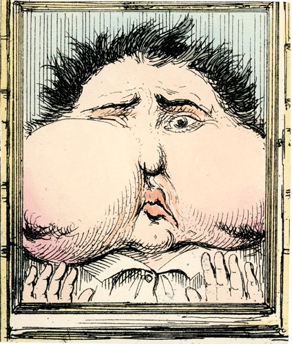

Post by Sabrina Oliveros, Guest Curator for Open Wide: 500 Years of Dentistry in Art.
What do a famous French dentist, Snow White, and a Victorian gentleman with a pesky toothache have in common? They are a few of the harassed, horrified, and often hilarious figures you can find in Open Wide: 500 Years of Dentistry in Art, UCSF Archives and Special Collections’ new exhibit that will open to the public on August 1, 2018.
Developed around selections from the collection of Dr. Morton G. Rivo, D.D.S., former Chief of Periodontics at the UCSF Medical Center at Mount Zion, Open Wide offers a glimpse into how perspectives on dentistry – and dentistry itself – have changed over the centuries. The artworks, supplemented by artifacts, rare books, and other materials from the UCSF Archives, will be on display on three floors of the UCSF Library.
You can find the artworks featuring the French dentist in the main lobby, Snow White on the first floor, and the Victorian gentleman on the fifth. Each speaks to a theme in Open Wide: developments in dental practices; symbolism and beliefs that have grown around the teeth; and, perhaps not the least, that all-too-familiar feeling of not wanting to go to the dentist.
The French Dentist
The French Dentist Shewing a Specimen of His Artificial Teeth and False Palates (1811) by Thomas Rowlandson.
If you’ve explored the UCSF Library or its social media recently, you might have already spotted the French dentist and his grinning patient in the exhibition poster, which is based on an 1811 etching, The French Dentist Shewing a Specimen of His Artificial Teeth and False Palates. The dentist of the title is Nicholas Dubois de Chémant, who was credited with the patents for the first porcelain teeth in Paris and London. The print pokes fun at a moment in history when these were all the rage among the upper classes, having been considered better than earlier ones of ivory and bone.
The French Dentist and his patient may seem very pleased with themselves, but the technology behind dentures still had to be perfected in the decades to come. You’ll find other samples of false teeth, developed through the first half of the 20th century, exhibited alongside this print.
The Toothache

An illustration from The Toothache (c. 1849) written by Horace Mayhew and illustrated by George Cruikshank.
Who would do anything not to go to the dentist? One Victorian gentleman, the protagonist of a comic strip published around 1849, certainly does. He even attempts to cauterize his own tooth with a red-hot poker and tries “240 infallible cures”– which include filling his mouth with cold water and sitting on the fireplace hob to let it boil – just to avoid a visit.
Discover whether his attempts at self-treatment amount to anything through panels that have been reproduced from the original illustrations. This Victorian gentleman’s adventures are complemented by similarly humorous cartoons from UCSF School of Dentistry yearbooks published in the 1900s.
Out Hunting for Teeth
A caza de dientes (Out Hunting for Teeth) from the series Return to Goya’s Caprichos (1999) by Enrique Chagoya.
Amidst all the amusing images in Open Wide, several prints strike a graver tone. These include three etchings depicting an 18th-century practice: pulling a hanged man’s teeth to use them for love potions. The earliest etching, by the Spanish master Francisco Goya, critiques this superstition; the second, by Salvador Dalí, mimics Goya’s and echoes some of Dalí’s sexual beliefs about teeth.
Snow White appears in the latest iteration of the scene, a commentary on Eurocentrism in art made by the Mexican-born American artist Enrique Chagoya. Here the Disney princess has replaced the young girl taking the corpse’s teeth in the original print, while another cartoon character, Rat Fink, has replaced the dead man. Superstitions about the teeth may no longer be the focal point of the piece, but it still has bite.
Goya and Dalí are not the only international luminaries represented in the show; Open Wide also features pieces by Marc Chagall, Utagawa Kuniyoshi, and Joan Miró. Aside from Chagoya, the exhibit also showcases other artists with connections to the San Francisco Bay Area, like Matt Phillips, Jeff Leedy, Art Hazelwood, and Dorothy Winslade.
Open Wide: 500 Years of Dentistry in Art will be on view until the summer of 2019.